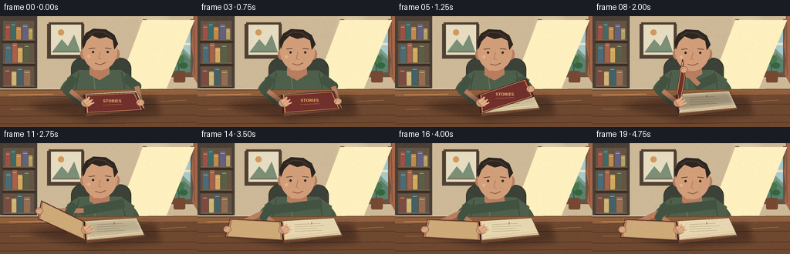
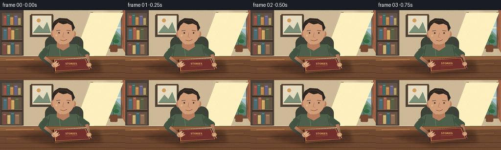

CODING AGENTS AS PIXEL WORLD MODELS
traex/GPT-5.6-Sol · motion_rationality_0046
点击播放 · 原生 RGB 像素
逐轮保存的候选
回放视频、检查图与代码变化。
每份候选均可单独播放。实际图片检查记录在下方工具轨迹中。
候选 01播放与检查图
点击播放 · 原生 RGB 像素


展开代码变化
--- 上一保存版本
+++ 本次保存版本
@@ -0,0 +1,256 @@
+from pathlib import Path
+import math
+import numpy as np
+from PIL import Image, ImageDraw, ImageFont, ImageFilter
+import artifact_io
+
+# Stylized hand-drawn animation rendered entirely from geometric primitives.
+ROOT = Path(__file__).resolve().parent
+W, H, N = 256, 144, 20
+S = 4
+rng = np.random.default_rng(46)
+
+def font(size, bold=False):
+ paths = [
+ "/usr/share/fonts/truetype/dejavu/DejaVuSans-Bold.ttf" if bold else "/usr/share/fonts/truetype/dejavu/DejaVuSans.ttf",
+ "/usr/share/fonts/truetype/liberation2/LiberationSans-Bold.ttf" if bold else "/usr/share/fonts/truetype/liberation2/LiberationSans-Regular.ttf",
+ ]
+ for p in paths:
+ if Path(p).exists(): return ImageFont.truetype(p, size*S)
+ return ImageFont.load_default()
+
+class Canvas:
+ def __init__(self, im):
+ self.im = im
+ self.d = ImageDraw.Draw(im, 'RGBA')
+ def pts(self, ps): return [(round(x*S), round(y*S)) for x,y in ps]
+ def poly(self, ps, fill, outline=None, width=1):
+ self.d.polygon(self.pts(ps), fill=fill)
+ if outline: self.d.line(self.pts(ps+[ps[0]]), fill=outline, width=max(1,round(width*S)), joint='curve')
+ def line(self, ps, fill, width=1, joint='curve'):
+ self.d.line(self.pts(ps), fill=fill, width=max(1,round(width*S)), joint=joint)
+ def ellipse(self, box, fill, outline=None, width=1):
+ b=tuple(round(v*S) for v in box); self.d.ellipse(b, fill=fill, outline=outline, width=max(1,round(width*S)))
+ def rect(self, box, fill, outline=None, width=1):
+ b=tuple(round(v*S) for v in box); self.d.rectangle(b, fill=fill, outline=outline, width=max(1,round(width*S)))
+ def rr(self, box, radius, fill, outline=None, width=1):
+ b=tuple(round(v*S) for v in box); self.d.rounded_rectangle(b, radius=radius*S, fill=fill, outline=outline, width=max(1,round(width*S)))
+ def text(self, xy, s, size, fill, bold=False, anchor=None):
+ self.d.text((xy[0]*S,xy[1]*S), s, font=font(size,bold), fill=fill, anchor=anchor)
+
+def smoothstep(x):
+ x=max(0.0,min(1.0,x)); return x*x*(3-2*x)
+
+def lerp(a,b,t): return a+(b-a)*t
+
+def background():
+ # Warm wall gradient.
+ arr=np.zeros((H*S,W*S,3),dtype=np.uint8)
+ yy=np.arange(H*S)[:,None]/S
+ xx=np.arange(W*S)[None,:]/S
+ light=np.clip(1-0.0015*((xx-201)**2)-0.00020*((yy-38)**2),0,1)
+ base=np.zeros_like(arr)
+ base[:,:,0]=np.clip(205+18*light,0,255)
+ base[:,:,1]=np.clip(185+19*light,0,255)
+ base[:,:,2]=np.clip(151+18*light,0,255)
+ im=Image.fromarray(base,'RGB').convert('RGBA'); c=Canvas(im)
+ # Left built-in shelf.
+ c.rect((0,0,48,102),(74,64,55,255)); c.rect((4,6,44,100),(101,84,67,255))
+ for y in (31,61,91):
+ c.rect((3,y,46,y+4),(60,48,39,255)); c.line([(4,y),(45,y)],(143,119,91,255),.7)
+ # Books, varied and visually legible.
+ books=[(7,11,13,30,'#9d5146'),(14,8,20,30,'#3f6b67'),(21,14,27,30,'#c18a4d'),(29,10,36,30,'#656181'),(37,16,42,30,'#b5a064'),
+ (7,38,14,60,'#496c78'),(16,35,22,60,'#a7614c'),(23,41,29,60,'#d1a95e'),(31,36,38,60,'#596046'),
+ (6,68,13,90,'#7e4b42'),(15,72,21,90,'#d0b272'),(22,66,29,90,'#426267'),(31,70,39,90,'#926e54')]
+ for x1,y1,x2,y2,col in books:
+ c.rr((x1,y1,x2,y2),.7,col); c.line([(x1+1,y1+3),(x2-1,y1+3)],(238,220,175,130),.6)
+ # Framed print.
+ c.rect((61,10,109,55),(77,66,56,90)); c.rect((63,8,108,53),(82,64,47,255)); c.rect((66,11,105,50),(230,220,194,255))
+ c.poly([(67,47),(80,30),(88,39),(96,24),(104,47)],(124,143,119,255))
+ c.ellipse((75,17,83,25),(d:= (210,154,90,255)))
+ c.line([(69,46),(102,46)],(118,99,77,255),1)
+ # Window and soft landscape.
+ c.rect((186,5,250,77),(237,225,197,255)); c.rect((190,8,247,73),(165,201,204,255))
+ c.poly([(190,53),(203,39),(217,56),(230,35),(247,52),(247,73),(190,73)],(127,155,132,255))
+ c.poly([(190,62),(208,48),(222,66),(238,48),(247,57),(247,73),(190,73)],(90,130,111,255))
+ c.line([(218.5,8),(218.5,73)],(238,225,197,255),3); c.line([(190,36),(247,36)],(238,225,197,255),3)
+ c.rect((185,4,190,78),(108,83,65,255)); c.rect((247,4,252,78),(108,83,65,255)); c.rect((185,73,252,79),(108,83,65,255))
+ # Curtain pulled aside.
+ c.poly([(251,0),(256,0),(256,88),(249,76),(251,57),(248,39)],(164,102,72,180))
+ c.line([(251,0),(252,76)],(120,79,65,170),1)
+ # Plant silhouette on right sill.
+ c.rr((225,71,240,86),2,(119,73,51,255)); c.line([(232,72),(231,57)],(59,94,63,255),1.5)
+ c.ellipse((222,55,231,63),(66,111,72,255)); c.ellipse((230,51,239,60),(72,119,72,255)); c.ellipse((232,60,243,68),(55,101,64,255))
+ # Baseboard and floor/wall junction.
+ c.rect((0,94,256,99),(128,102,78,255)); c.line([(0,94),(256,94)],(233,217,183,190),1)
+ return im
+
+BG=background()
+# Fine static paper-like texture so surfaces do not feel digitally flat.
+noise=rng.normal(0,1.45,(H,W,1))
+
+def render_frame(i):
+ t=i/4.0
+ q=smoothstep((t-0.55)/3.05)
+ # Very small, damped settling of the opened cover.
+ theta=math.pi*q
+ if q>=0.999:
+ theta += 0.018*math.sin((t-3.6)*8)*math.exp(-(t-3.6)*2.0)
+ breath=0.45*math.sin(t*1.7)
+ im=BG.copy(); c=Canvas(im)
+
+ # Soft sunlight on wall and table.
+ c.poly([(185,5),(252,5),(214,98),(150,98)],(255,240,191,18))
+
+ # Chair behind the reader.
+ c.rr((92,54+breath,170,123+breath),14,(61,66,56,255), (47,49,42,255),1)
+ c.line([(97,87),(97,127)],(43,44,39,255),3); c.line([(165,87),(165,127)],(43,44,39,255),3)
+
+ # Torso and shoulders, olive knit pullover.
+ shoulder_y=75+breath
+ c.ellipse((77,69+breath,181,133+breath),(73,91,72,255))
+ c.poly([(87,80+breath),(102,70+breath),(157,70+breath),(174,82+breath),(168,125),(88,125)],(78,96,75,255))
+ # sweater seams and folds
+ c.line([(102,73+breath),(96,104),(99,121)],(53,72,57,170),1)
+ c.line([(157,73+breath),(164,104),(159,124)],(53,72,57,160),1)
+ c.line([(121,78+breath),(126,119)],(119,133,101,80),.7)
+
+ # Neck and face.
+ skin=(210,158,121,255); skin_shadow=(184,126,95,255); skin_light=(227,180,139,255)
+ c.poly([(116,66+breath),(116,76+breath),(129,83+breath),(142,75+breath),(141,62+breath)],skin_shadow)
+ # ears
+ c.ellipse((104,42+breath,113,56+breath),skin_shadow); c.ellipse((146,42+breath,155,56+breath),skin_shadow)
+ # head, slightly dipping as book opens
+ dip=2.2*q
+ c.ellipse((107,19+breath+dip,152,70+breath+dip),skin)
+ c.poly([(109,35+dip+breath),(111,59+dip+breath),(122,70+dip+breath),(137,68+dip+breath),(150,54+dip+breath),(149,35+dip+breath)],skin)
+ # hair silhouette
+ hair=(45,38,33,255)
+ c.poly([(108,42+dip+breath),(106,32+dip+breath),(111,22+dip+breath),(121,16+dip+breath),(137,17+dip+breath),(148,24+dip+breath),(153,36+dip+breath),(148,43+dip+breath),(146,31+dip+breath),(138,27+dip+breath),(129,29+dip+breath),(119,25+dip+breath),(112,32+dip+breath)],hair)
+ c.line([(114,25+dip+breath),(123,20+dip+breath),(135,21+dip+breath),(145,28+dip+breath)],(75,60,48,255),1.2)
+ # Brows and downward-focused eyes; one natural blink.
+ eye_y=46+dip+breath
+ c.line([(115,42+dip+breath),(123,41+dip+breath)],(73,51,39,255),1.1)
+ c.line([(136,41+dip+breath),(144,42+dip+breath)],(73,51,39,255),1.1)
+ blink=max(0,1-abs(i-10))
+ if blink>0.5:
+ c.line([(116,46+dip+breath),(123,47+dip+breath)],(65,46,37,255),1.2)
+ c.line([(136,47+dip+breath),(143,46+dip+breath)],(65,46,37,255),1.2)
+ else:
+ c.ellipse((119,45+dip+breath,122,48+dip+breath),(55,45,37,255))
+ c.ellipse((138,45+dip+breath,141,48+dip+breath),(55,45,37,255))
+ c.line([(130,46+dip+breath),(128,55+dip+breath),(132,56+dip+breath)],(169,111,82,220),.8)
+ c.line([(123,61+dip+breath),(130,63+dip+breath),(137,60+dip+breath)],(126,71,61,220),1)
+ c.ellipse((113,50+dip+breath,117,54+dip+breath),(231,176,137,80))
+
+ # Desk, foreground with beveled edge and grain.
+ c.poly([(0,96),(256,94),(256,144),(0,144)],(111,72,48,255))
+ c.poly([(0,97),(256,95),(256,103),(0,106)],(145,96,61,255))
+ c.line([(0,105),(256,102)],(70,45,34,190),1)
+ for y,alpha in [(116,45),(130,38),(140,28)]:
+ c.line([(0,y),(256,y-2)],(64,39,28,alpha),.7)
+ c.line([(13,121),(69,120),(87,117)],(178,119,72,50),.7)
+ c.line([(202,111),(241,109)],(181,123,75,45),.7)
+
+ # Opening geometry: cover hinged along the left edge of the page block.
+ ht=(109,102); hb=(111,126)
+ ft=(109+67*math.cos(theta), 99-43*math.sin(theta))
+ fb=(111+75*math.cos(theta), 122-43*math.sin(theta))
+ cover=[ht,ft,fb,hb]
+
+ # Arms move coherently with the cover. The left hand braces the spine.
+ # Right arm crosses the body while gripping the free edge.
+ hand=(lerp(ft[0],fb[0],.57),lerp(ft[1],fb[1],.57))
+ shoulder=(161,79+breath)
+ elbow=(lerp(177,92,q), lerp(91,87,q)+breath*.3)
+ # sleeves and forearms are behind the book; hands are redrawn atop it.
+ c.line([shoulder,elbow],(67,83,66,255),12)
+ c.ellipse((elbow[0]-6,elbow[1]-6,elbow[0]+6,elbow[1]+6),(67,83,66,255))
+ c.line([elbow,hand],skin_shadow,6.5)
+ # left sleeve/forearm to spine
+ c.line([(96,79+breath),(86,96),(108,114)],(67,83,66,255),11)
+ c.line([(91,97),(111,113)],skin_shadow,6)
+
+ # Book's shadow on tabletop.
+ shadow=Image.new('RGBA',im.size,(0,0,0,0)); sd=Canvas(shadow)
+ shpoly=[(35,116),(107,105),(199,105),(208,127),(118,135)]
+ sd.poly(shpoly,(35,22,18,105))
+ shadow=shadow.filter(ImageFilter.GaussianBlur(4*S)); im=Image.alpha_composite(im,shadow); c=Canvas(im)
+
+ # Heavy cream page block remains on the right of the hinge.
+ pages=[(108,102),(176,98),(187,120),(111,127)]
+ c.poly([(111,106),(178,101),(188,121),(112,130)],(110,68,46,255)) # cover beneath pages
+ c.poly([(109,101),(177,97),(187,119),(111,126)],(231,215,176,255),(106,77,55,255),.8)
+ # layered page edges
+ c.line([(112,126),(187,119)],(128,94,65,255),1.4)
+ c.line([(116,124),(185,117)],(183,151,107,255),.65)
+ c.line([(116,121),(184,114)],(191,160,116,190),.55)
+ # title-page rules exposed as opening advances
+ if q>.08:
+ alpha=int(220*min(1,(q-.08)/.25))
+ for k,L in enumerate((33,38,29,35)):
+ yy=105.5+k*3.0
+ c.line([(126,yy),(126+L,yy-1.6)],(121,108,84,alpha),.55)
+ c.text((148,104),'I',4,(111,93,69,alpha),bold=True,anchor='mm')
+
+ # Dynamic shadow cast by the rising cover on page/table.
+ if 0.05<q<.95:
+ cast=Image.new('RGBA',im.size,(0,0,0,0)); sc=Canvas(cast)
+ strength=int(95*math.sin(theta))
+ sc.poly([(109,103),(177,99),(184,114),(112,121)],(30,20,16,strength))
+ cast=cast.filter(ImageFilter.GaussianBlur(2.2*S)); im=Image.alpha_composite(im,cast); c=Canvas(im)
+
+ # Render hinged cover. Exterior starts burgundy; inside endpaper appears past vertical.
+ facing=math.cos(theta)
+ if facing>=0:
+ col=(113,48,43,255); edge=(70,31,31,255)
+ else:
+ col=(177,124,86,255); edge=(79,42,36,255)
+ c.poly(cover,col,edge,1.1)
+ # Cover border follows the quadrilateral, emphasizing its rigid motion.
+ inset=.075
+ inner=[]
+ center=(sum(x for x,y in cover)/4,sum(y for x,y in cover)/4)
+ for x,y in cover: inner.append((lerp(x,center[0],inset),lerp(y,center[1],inset)))
+ c.line(inner+[inner[0]],(231,178,106,175) if facing>=0 else (224,182,129,150),.7)
+ # Cover title only while its outside faces camera and has sufficient projected width.
+ if facing>.24:
+ cx=sum(x for x,y in cover)/4; cy=sum(y for x,y in cover)/4
+ c.text((cx,cy-2),'STORIES',5,(228,179,102,230),True,anchor='mm')
+ c.line([(cx-12,cy+3),(cx+12,cy+2)],(228,179,102,190),.55)
+ elif facing<-.24:
+ # Inside-cover inset endpaper.
+ c.poly(inner,(207,170,121,105))
+ c.line(inner+[inner[0]],(112,70,52,170),.6)
+ # Hinge/spine stays fixed.
+ c.line([ht,hb],(59,31,30,255),2)
+ c.line([(ht[0]+2,ht[1]),(hb[0]+2,hb[1])],(208,129,72,150),.7)
+
+ # Hands on top: left stabilizes hinge, right grips the moving outer edge.
+ # left palm and fingers
+ c.ellipse((105,107,119,118),skin,(140,88,68,255),.6)
+ c.line([(109,112),(116,105)],skin_light,2.2)
+ c.line([(112,114),(120,108)],skin_light,2.0)
+ c.line([(114,116),(122,112)],skin_light,1.8)
+ c.line([(107,110),(112,118)],(135,85,65,150),.55)
+ # right palm aligned to edge, plus fingers curling around it
+ ex=fb[0]-ft[0]; ey=fb[1]-ft[1]; ln=max(1,math.hypot(ex,ey)); nx=-ey/ln; ny=ex/ln
+ c.ellipse((hand[0]-5.2,hand[1]-4.3,hand[0]+5.2,hand[1]+4.3),skin,(133,82,64,255),.6)
+ for off in (-2.4,0,2.4):
+ px=hand[0]+ex/ln*off; py=hand[1]+ey/ln*off
+ c.line([(px-nx*1.5,py-ny*1.5),(px+nx*3.3,py+ny*3.3)],skin_light,1.35)
+ c.line([(hand[0]-ex/ln*3,hand[1]-ey/ln*3),(hand[0]+nx*4,hand[1]+ny*4)],(133,82,64,180),.6)
+
+ # A few foreground highlights and static grain.
+ c.line([(12,102),(69,101)],(215,154,91,35),1)
+ rgb=np.asarray(im.convert('RGB').resize((W,H),Image.Resampling.LANCZOS)).astype(np.int16)
+ rgb=np.clip(rgb+noise,0,255).astype(np.uint8)
+ return rgb
+
+def main():
+ frames=np.stack([render_frame(i) for i in range(N)],axis=0)
+ artifact_io.save(frames, ROOT)
+ print('saved', frames.shape, frames.dtype)
+
+if __name__=='__main__':
+ main()
可观测工具轨迹
实际执行的命令与返回图片。
命令 1exit 0
/bin/bash -lc "cat prompt.txt && printf '\\n---RULES---\\n' && cat GENERATION_RULES.md && printf '\\n---SPEC---\\n' && cat task_spec.json"
命令 2exit 0
/bin/bash -lc "find . -maxdepth 2 -type f -printf '%P\\n' | sort | head -200 && printf '\\n---BINARIES---\\n' && command -v ffmpeg || true && command -v blender || true && command -v python3 || true"
命令 3exit 0
/bin/bash -lc 'cat artifact_io.py'
命令 4exit 0
/bin/bash -lc "cat > generate.py <<'PY'
from pathlib import Path
import math
import numpy as np
from PIL import Image, ImageDraw, ImageFont, ImageFilter
import artifact_io
# Stylized hand-drawn animation rendered entirely from geometric primitives.
ROOT = Path(__file__).resolve().parent
W, H, N = 256, 144, 20
S = 4
rng = np.random.default_rng(46)
def font(size, bold=False):
paths = [
\"/usr/share/fonts/truetype/dejavu/DejaVuSans-Bold.ttf\" if bold else \"/usr/share/fonts/truetype/dejavu/DejaVuSans.ttf\",
\"/usr/share/fonts/truetype/liberation2/LiberationSans-Bold.ttf\" if bold else \"/usr/share/fonts/truetype/liberation2/LiberationSans-Regular.ttf\",
]
for p in paths:
if Path(p).exists(): return ImageFont.truetype(p, size*S)
return ImageFont.load_default()
class Canvas:
def __init__(self, im):
self.im = im
self.d = ImageDraw.Draw(im, 'RGBA')
def pts(self, ps): return [(round(x*S), round(y*S)) for x,y in ps]
def poly(self, ps, fill, outline=None, width=1):
self.d.polygon(self.pts(ps), fill=fill)
if outline: self.d.line(self.pts(ps+[ps[0]]), fill=outline, width=max(1,round(width*S)), joint='curve')
def line(self, ps, fill, width=1, joint='curve'):
self.d.line(self.pts(ps), fill=fill, width=max(1,round(width*S)), joint=joint)
def ellipse(self, box, fill, outline=None, width=1):
b=tuple(round(v*S) for v in box); self.d.ellipse(b, fill=fill, outline=outline, width=max(1,round(width*S)))
def rect(self, box, fill, outline=None, width=1):
b=tuple(round(v*S) for v in box); self.d.rectangle(b, fill=fill, outline=outline, width=max(1,round(width*S)))
def rr(self, box, radius, fill, outline=None, width=1):
b=tuple(round(v*S) for v in box); self.d.rounded_rectangle(b, radius=radius*S, fill=fill, outline=outline, width=max(1,round(width*S)))
def text(self, xy, s, size, fill, bold=False, anchor=None):
self.d.text((xy[0]*S,xy[1]*S), s, font=font(size,bold), fill=fill, anchor=anchor)
def smoothstep(x):
x=max(0.0,min(1.0,x)); return x*x*(3-2*x)
def lerp(a,b,t): return a+(b-a)*t
def background():
# Warm wall gradient.
arr=np.zeros((H*S,W*S,3),dtype=np.uint8)
yy=np.arange(H*S)[:,None]/S
xx=np.arange(W*S)[None,:]/S
light=np.clip(1-0.0015*((xx-201)**2)-0.00020*((yy-38)**2),0,1)
base=np.zeros_like(arr)
base[:,:,0]=np.clip(205+18*light,0,255)
base[:,:,1]=np.clip(185+19*light,0,255)
base[:,:,2]=np.clip(151+18*light,0,255)
im=Image.fromarray(base,'RGB').convert('RGBA'); c=Canvas(im)
# Left built-in shelf.
c.rect((0,0,48,102),(74,64,55,255)); c.rect((4,6,44,100),(101,84,67,255))
for y in (31,61,91):
c.rect((3,y,46,y+4),(60,48,39,255)); c.line([(4,y),(45,y)],(143,119,91,255),.7)
# Books, varied and visually legible.
books=[(7,11,13,30,'#9d5146'),(14,8,20,30,'#3f6b67'),(21,14,27,30,'#c18a4d'),(29,10,36,30,'#656181'),(37,16,42,30,'#b5a064'),
(7,38,14,60,'#496c78'),(16,35,22,60,'#a7614c'),(23,41,29,60,'#d1a95e'),(31,36,38,60,'#596046'),
(6,68,13,90,'#7e4b42'),(15,72,21,90,'#d0b272'),(22,66,29,90,'#426267'),(31,70,39,90,'#926e54')]
for x1,y1,x2,y2,col in books:
c.rr((x1,y1,x2,y2),.7,col); c.line([(x1+1,y1+3),(x2-1,y1+3)],(238,220,175,130),.6)
# Framed print.
c.rect((61,10,109,55),(77,66,56,90)); c.rect((63,8,108,53),(82,64,47,255)); c.rect((66,11,105,50),(230,220,194,255))
c.poly([(67,47),(80,30),(88,39),(96,24),(104,47)],(124,143,119,255))
c.ellipse((75,17,83,25),(d:= (210,154,90,255)))
c.line([(69,46),(102,46)],(118,99,77,255),1)
# Window and soft landscape.
c.rect((186,5,250,77),(237,225,197,255)); c.rect((190,8,247,73),(165,201,204,255))
c.poly([(190,53),(203,39),(217,56),(230,35),(247,52),(247,73),(190,73)],(127,155,132,255))
c.poly([(190,62),(208,48),(222,66),(238,48),(247,57),(247,73),(190,73)],(90,130,111,255))
c.line([(218.5,8),(218.5,73)],(238,225,197,255),3); c.line([(190,36),(247,36)],(238,225,197,255),3)
c.rect((185,4,190,78),(108,83,65,255)); c.rect((247,4,252,78),(108,83,65,255)); c.rect((185,73,252,79),(108,83,65,255))
# Curtain pulled aside.
c.poly([(251,0),(256,0),(256,88),(249,76),(251,57),(248,39)],(164,102,72,180))
c.line([(251,0),(252,76)],(120,79,65,170),1)
# Plant silhouette on right sill.
c.rr((225,71,240,86),2,(119,73,51,255)); c.line([(232,72),(231,57)],(59,94,63,255),1.5)
c.ellipse((222,55,231,63),(66,111,72,255)); c.ellipse((230,51,239,60),(72,119,72,255)); c.ellipse((232,60,243,68),(55,101,64,255))
# Baseboard and floor/wall junction.
c.rect((0,94,256,99),(128,102,78,255)); c.line([(0,94),(256,94)],(233,217,183,190),1)
return im
BG=background()
# Fine static paper-like texture so surfaces do not feel digitally flat.
noise=rng.normal(0,1.45,(H,W,1))
def render_frame(i):
t=i/4.0
q=smoothstep((t-0.55)/3.05)
# Very small, damped settling of the opened cover.
theta=math.pi*q
if q>=0.999:
theta += 0.018*math.sin((t-3.6)*8)*math.exp(-(t-3.6)*2.0)
breath=0.45*math.sin(t*1.7)
im=BG.copy(); c=Canvas(im)
# Soft sunlight on wall and table.
c.poly([(185,5),(252,5),(214,98),(150,98)],(255,240,191,18))
# Chair behind the reader.
c.rr((92,54+breath,170,123+breath),14,(61,66,56,255), (47,49,42,255),1)
c.line([(97,87),(97,127)],(43,44,39,255),3); c.line([(165,87),(165,127)],(43,44,39,255),3)
# Torso and shoulders, olive knit pullover.
shoulder_y=75+breath
c.ellipse((77,69+breath,181,133+breath),(73,91,72,255))
c.poly([(87,80+breath),(102,70+breath),(157,70+breath),(174,82+breath),(168,125),(88,125)],(78,96,75,255))
# sweater seams and folds
c.line([(102,73+breath),(96,104),(99,121)],(53,72,57,170),1)
c.line([(157,73+breath),(164,104),(159,124)],(53,72,57,160),1)
c.line([(121,78+breath),(126,119)],(119,133,101,80),.7)
# Neck and face.
skin=(210,158,121,255); skin_shadow=(184,126,95,255); skin_light=(227,180,139,255)
c.poly([(116,66+breath),(116,76+breath),(129,83+breath),(142,75+breath),(141,62+breath)],skin_shadow)
# ears
c.ellipse((104,42+breath,113,56+breath),skin_shadow); c.ellipse((146,42+breath,155,56+breath),skin_shadow)
# head, slightly dipping as book opens
dip=2.2*q
c.ellipse((107,19+breath+dip,152,70+breath+dip),skin)
c.poly([(109,35+dip+breath),(111,59+dip+breath),(122,70+dip+breath),(137,68+dip+breath),(150,54+dip+breath),(149,35+dip+breath)],skin)
# hair silhouette
hair=(45,38,33,255)
c.poly([(108,42+dip+breath),(106,32+dip+breath),(111,22+dip+breath),(121,16+dip+breath),(137,17+dip+breath),(148,24+dip+breath),(153,36+dip+breath),(148,43+dip+breath),(146,31+dip+breath),(138,27+dip+breath),(129,29+dip+breath),(119,25+dip+breath),(112,32+dip+breath)],hair)
c.line([(114,25+dip+breath),(123,20+dip+breath),(135,21+dip+breath),(145,28+dip+breath)],(75,60,48,255),1.2)
# Brows and downward-focused eyes; one natural blink.
eye_y=46+dip+breath
c.line([(115,42+dip+breath),(123,41+dip+breath)],(73,51,39,255),1.1)
c.line([(136,41+dip+breath),(144,42+dip+breath)],(73,51,39,255),1.1)
blink=max(0,1-abs(i-10))
if blink>0.5:
c.line([(116,46+dip+breath),(123,47+dip+breath)],(65,46,37,255),1.2)
c.line([(136,47+dip+breath),(143,46+dip+breath)],(65,46,37,255),1.2)
else:
c.ellipse((119,45+dip+breath,122,48+dip+breath),(55,45,37,255))
c.ellipse((138,45+dip+breath,141,48+dip+breath),(55,45,37,255))
c.line([(130,46+dip+breath),(128,55+dip+breath),(132,56+dip+breath)],(169,111,82,220),.8)
c.line([(123,61+dip+breath),(130,63+dip+breath),(137,60+dip+breath)],(126,71,61,220),1)
c.ellipse((113,50+dip+breath,117,54+dip+breath),(231,176,137,80))
# Desk, foreground with beveled edge and grain.
c.poly([(0,96),(256,94),(256,144),(0,144)],(111,72,48,255))
c.poly([(0,97),(256,95),(256,103),(0,106)],(145,96,61,255))
c.line([(0,105),(256,102)],(70,45,34,190),1)
for y,alpha in [(116,45),(130,38),(140,28)]:
c.line([(0,y),(256,y-2)],(64,39,28,alpha),.7)
c.line([(13,121),(69,120),(87,117)],(178,119,72,50),.7)
c.line([(202,111),(241,109)],(181,123,75,45),.7)
# Opening geometry: cover hinged along the left edge of the page block.
ht=(109,102); hb=(111,126)
ft=(109+67*math.cos(theta), 99-43*math.sin(theta))
fb=(111+75*math.cos(theta), 122-43*math.sin(theta))
cover=[ht,ft,fb,hb]
# Arms move coherently with the cover. The left hand braces the spine.
# Right arm crosses the body while gripping the free edge.
hand=(lerp(ft[0],fb[0],.57),lerp(ft[1],fb[1],.57))
shoulder=(161,79+breath)
elbow=(lerp(177,92,q), lerp(91,87,q)+breath*.3)
# sleeves and forearms are behind the book; hands are redrawn atop it.
c.line([shoulder,elbow],(67,83,66,255),12)
c.ellipse((elbow[0]-6,elbow[1]-6,elbow[0]+6,elbow[1]+6),(67,83,66,255))
c.line([elbow,hand],skin_shadow,6.5)
# left sleeve/forearm to spine
c.line([(96,79+breath),(86,96),(108,114)],(67,83,66,255),11)
c.line([(91,97),(111,113)],skin_shadow,6)
# Book's shadow on tabletop.
shadow=Image.new('RGBA',im.size,(0,0,0,0)); sd=Canvas(shadow)
shpoly=[(35,116),(107,105),(199,105),(208,127),(118,135)]
sd.poly(shpoly,(35,22,18,105))
shadow=shadow.filter(ImageFilter.GaussianBlur(4*S)); im=Image.alpha_composite(im,shadow); c=Canvas(im)
# Heavy cream page block remains on the right of the hinge.
pages=[(108,102),(176,98),(187,120),(111,127)]
c.poly([(111,106),(178,101),(188,121),(112,130)],(110,68,46,255)) # cover beneath pages
c.poly([(109,101),(177,97),(187,119),(111,126)],(231,215,176,255),(106,77,55,255),.8)
# layered page edges
c.line([(112,126),(187,119)],(128,94,65,255),1.4)
c.line([(116,124),(185,117)],(183,151,107,255),.65)
c.line([(116,121),(184,114)],(191,160,116,190),.55)
# title-page rules exposed as opening advances
if q>.08:
alpha=int(220*min(1,(q-.08)/.25))
for k,L in enumerate((33,38,29,35)):
yy=105.5+k*3.0
c.line([(126,yy),(126+L,yy-1.6)],(121,108,84,alpha),.55)
c.text((148,104),'I',4,(111,93,69,alpha),bold=True,anchor='mm')
# Dynamic shadow cast by the rising cover on page/table.
if 0.05<q<.95:
cast=Image.new('RGBA',im.size,(0,0,0,0)); sc=Canvas(cast)
strength=int(95*math.sin(theta))
sc.poly([(109,103),(177,99),(184,114),(112,121)],(30,20,16,strength))
cast=cast.filter(ImageFilter.GaussianBlur(2.2*S)); im=Image.alpha_composite(im,cast); c=Canvas(im)
# Render hinged cover. Exterior starts burgundy; inside endpaper appears past vertical.
facing=math.cos(theta)
if facing>=0:
col=(113,48,43,255); edge=(70,31,31,255)
else:
col=(177,124,86,255); edge=(79,42,36,255)
c.poly(cover,col,edge,1.1)
# Cover border follows the quadrilateral, emphasizing its rigid motion.
inset=.075
inner=[]
center=(sum(x for x,y in cover)/4,sum(y for x,y in cover)/4)
for x,y in cover: inner.append((lerp(x,center[0],inset),lerp(y,center[1],inset)))
c.line(inner+[inner[0]],(231,178,106,175) if facing>=0 else (224,182,129,150),.7)
# Cover title only while its outside faces camera and has sufficient projected width.
if facing>.24:
cx=sum(x for x,y in cover)/4; cy=sum(y for x,y in cover)/4
c.text((cx,cy-2),'STORIES',5,(228,179,102,230),True,anchor='mm')
c.line([(cx-12,cy+3),(cx+12,cy+2)],(228,179,102,190),.55)
elif facing<-.24:
# Inside-cover inset endpaper.
c.poly(inner,(207,170,121,105))
c.line(inner+[inner[0]],(112,70,52,170),.6)
# Hinge/spine stays fixed.
c.line([ht,hb],(59,31,30,255),2)
c.line([(ht[0]+2,ht[1]),(hb[0]+2,hb[1])],(208,129,72,150),.7)
# Hands on top: left stabilizes hinge, right grips the moving outer edge.
# left palm and fingers
c.ellipse((105,107,119,118),skin,(140,88,68,255),.6)
c.line([(109,112),(116,105)],skin_light,2.2)
c.line([(112,114),(120,108)],skin_light,2.0)
c.line([(114,116),(122,112)],skin_light,1.8)
c.line([(107,110),(112,118)],(135,85,65,150),.55)
# right palm aligned to edge, plus fingers curling around it
ex=fb[0]-ft[0]; ey=fb[1]-ft[1]; ln=max(1,math.hypot(ex,ey)); nx=-ey/ln; ny=ex/ln
c.ellipse((hand[0]-5.2,hand[1]-4.3,hand[0]+5.2,hand[1]+4.3),skin,(133,82,64,255),.6)
for off in (-2.4,0,2.4):
px=hand[0]+ex/ln*off; py=hand[1]+ey/ln*off
c.line([(px-nx*1.5,py-ny*1.5),(px+nx*3.3,py+ny*3.3)],skin_light,1.35)
c.line([(hand[0]-ex/ln*3,hand[1]-ey/ln*3),(hand[0]+nx*4,hand[1]+ny*4)],(133,82,64,180),.6)
# A few foreground highlights and static grain.
c.line([(12,102),(69,101)],(215,154,91,35),1)
rgb=np.asarray(im.convert('RGB').resize((W,H),Image.Resampling.LANCZOS)).astype(np.int16)
rgb=np.clip(rgb+noise,0,255).astype(np.uint8)
return rgb
def main():
frames=np.stack([render_frame(i) for i in range(N)],axis=0)
artifact_io.save(frames, ROOT)
print('saved', frames.shape, frames.dtype)
if __name__=='__main__':
main()
PY
python3 generate.py
ls -lh pixels.npz inspection.png index.html frames/00.png frames/19.png"命令 5exit 0
/bin/bash -lc "python3 - <<'PY'
import numpy as np
from PIL import Image
from pathlib import Path
z=np.load('pixels.npz')['pixels']
assert z.shape==(144,256,20)
fs=np.stack([np.array(Image.open(f'frames/{i:02d}.png').convert('RGB')) for i in range(20)])
print('frames',fs.shape,fs.dtype,'range',fs.min(),fs.max())
print('mean abs consecutive deltas:',[round(float(np.abs(fs[i].astype(float)-fs[i-1]).mean()),2) for i in range(1,20)])
print('unique frame hashes',len({hash(x.tobytes()) for x in fs}))
print('artifacts ok:',all(Path(p).exists() and Path(p).stat().st_size>0 for p in ['pixels.npz','index.html','inspection.png','transition_check.png']))
PY"保存候选 1 份；完成命令 5 次；可验证图片返回 0 张。原始 API 响应与完整日志保留在本地。